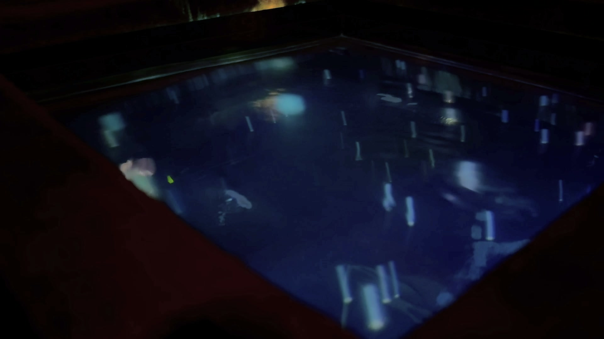
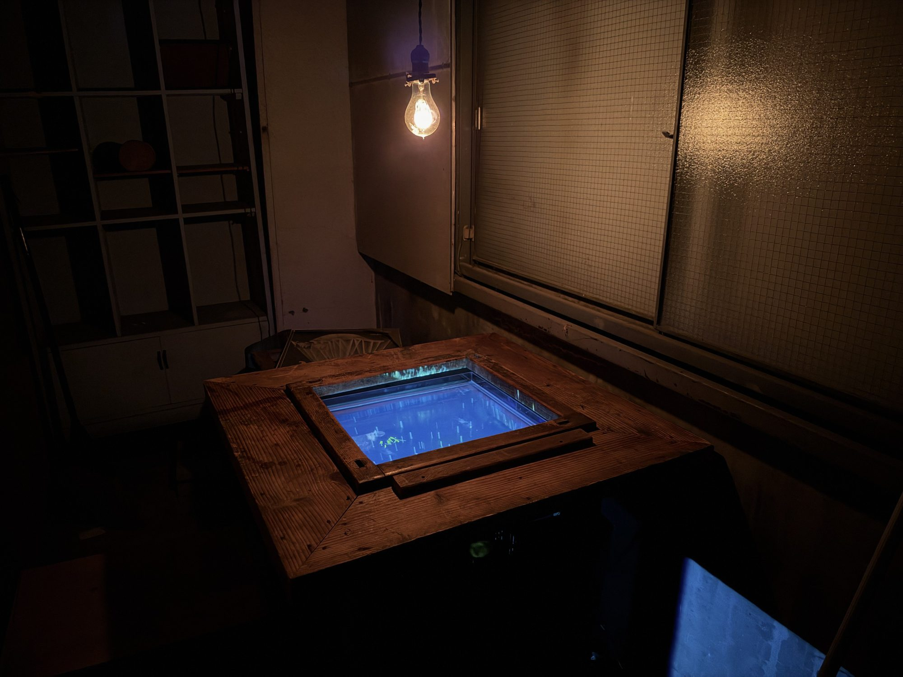
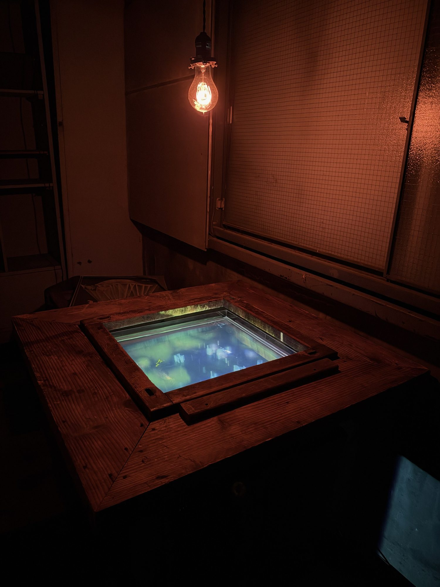
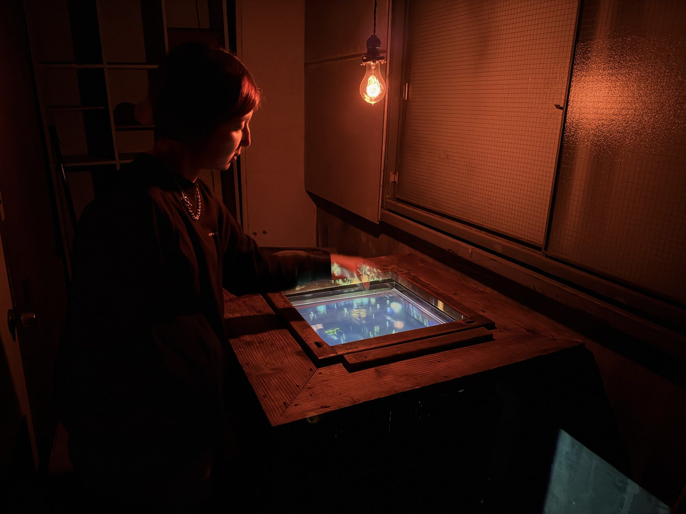
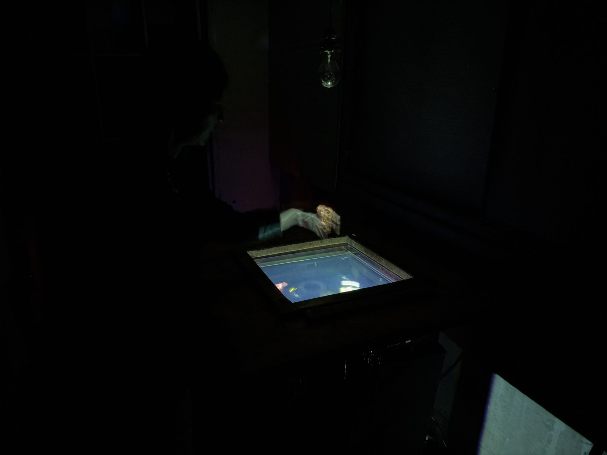
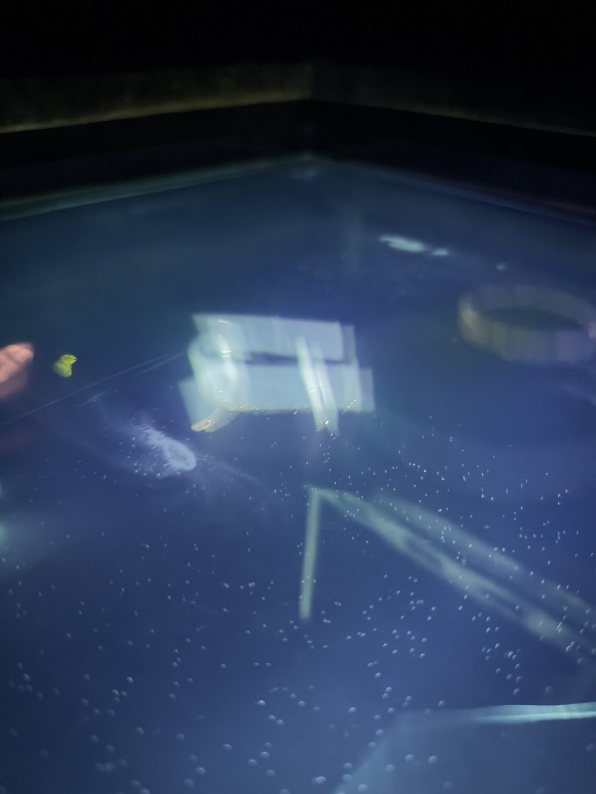
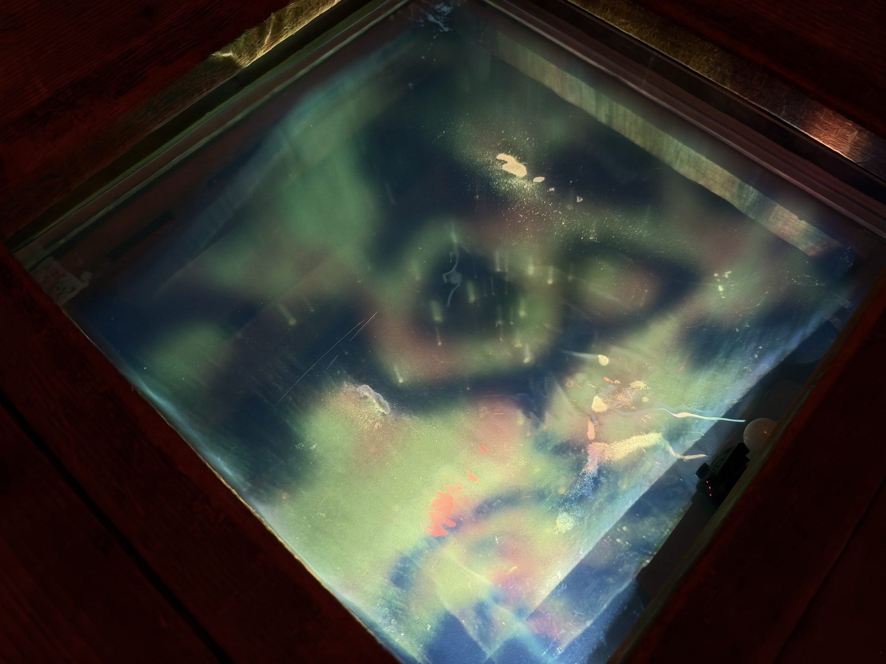
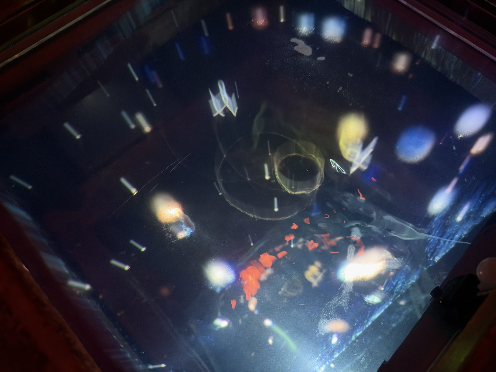

囲炉裏は、火を囲む場所だった。
諏訪の湖のほとりは、水の恵みによって育ってきたまちである。
この作品は、火の代わりに水を囲む。炉に張った水が発光し、水底から言葉が不規則に浮かび上がっては、音と光になって、また水に還る。
受け取ってきた水の恵みと、これから水とどう向き合うのか。ただ囲んで、めいめいの思いを。

Concept
この作品は、水を囲む装置です。炉に張った水面上に手をかざすと、言葉が雫となって現れ、その波紋とともに音が奏でられます。水にちなんだ言葉がランダムに生成され、内容によってメロディや、投影される映像も変化します。
こちらの作品は、当初、長野県岡谷市で開催された諏訪ノ湖芸術祭2025のワークショップで、来場者が紡いだ言葉を再生する装置として始まりました。諏訪湖のほとりで開かれる芸術祭でしたので、水をコンセプトに考えたのがはじまりです。
2026年の諏訪ノ湖芸術祭に出展の際は、ワークショップがなく、常設の展示でしたので、自動で動くようにする必要がありました。そこで、諏訪湖と流域が受けてきた水の恵み、水の現在、水のこれからについて、少し考えてもらえたらと思いました。水にちなむきれいな言葉と、諏訪湖のいまの環境を想起させる言葉、そして、いま起きている災害や水による害につながる言葉。そういった言葉をもとに、来場者が少しでも考えるきっかけになればと思い、作品を変化させました。
水槽に張った水は、地元長野県岡谷市の地下水や川の源流の水で、水道水は使っていません。
水だけでは映像が映らないので、水の中にシルクパウダーを溶け込ませています。作者の出身地である岡谷市は、かつてシルクの産地として、現在の発展に寄与しました。そのシルクの恩恵と歴史も感じたいと思ったからです。光がシルクパウダーに少し反射することで、文字が浮かびやすくなります。それだけでは難しい部分には、投影材としてアクリル絵具のグロスポリマーメディウムを一部入れてあります。シルクパウダーは沈むこともありますが、気づいた人には、そこも感じてもらえたらうれしいです。
映像を映しているプロジェクターはエプソン製です。諏訪では、水の恵みによってシルクの産業が栄え、そこから製造業が生まれました。その製造業を代表するエプソンのプロジェクターを使うことで、説明はしていませんが、諏訪という地域の歴史を作品に内包しています。
しかしながら、工業の発展によって、諏訪湖の水が汚れてきた歴史もあります。そして、この作品のプログラムは、ほとんどが AI（Anthropic の Claude）によってコーディングされています。これから、AI のデータセンターでは、水がたくさん使われていくといわれています。この作品は、テクノロジーへの批判を内包しつつも、テクノロジーに依存しています。
流れているBGMは、諏訪地域のフィールドレコーディングです。そこから想起された音階を、作曲者が奏でています。楽曲は、作曲者が2025年の芸術祭のときに、この作品とともに書き下ろしたものです。
囲炉裏の木枠や土台は、作者の実家の土蔵にしまい込んであったものです。かつては、この炉を囲んで、さまざまな会話が交わされたのでしょう。火のゆらぎではなく水のゆらぎを眺めながら、いまの時代の会話や、未来を考える会話、かつての湖に思いを馳せる会話が生まれることを願っています。
この作品はプログラムで動いているので、会場のコンセプトや場所に合わせて、投影する内容を変えることもできます。山梨も同じように、海のない、山に囲まれた土地で、水の恵みを受けてきました。この作品が、山梨の方にとっても、山梨の自然を考えるきっかけになればと思います。







iro:re（イロリ）という名には、色（iro）を継ぎ足す（re）＝囲炉裏、という置き換えを最初から埋め込んでいます。岡谷は、諏訪湖の水がただ一筋、天竜川となって流れ出す源流のまちです。
Data
- 作品名
- iro:re（イロリ）
- 制作年
- 2026
- 素材
- ミクストメディア
木（作者の実家の土蔵にあった囲炉裏の木枠・土台）、水（地元の地下水・川の源流）、シルクパウダー、アクリル絵具のグロスポリマーメディウム、映像、音 - 機材
- MacBook／プロジェクター（エプソン EB-U32）／人感センサー（Raspberry Pi Pico で読み取り）
天井の裸電球（スマートプラグで点灯・消灯）／アンプ・スピーカー - ソフトウェア
- 映像：自作のプログラム。Google Chrome 上でリアルタイムに生成（AI と対話して制作）
音：Ableton Live。作品が MIDI を送り、その場で鳴らす
BGM：諏訪地域のフィールドレコーディング - 言葉
- 23語（綺麗 17・不穏 4・狂気 2）
- 動き
- 待機状態では、蛍のような、行き交う人々のような、微生物のような光の柱が生命体のように漂っています。
手をかざすと、言葉と波紋が広がり、雫と音が生まれます。
波紋が生命体に当たると、驚いたように色と共に発光します。
諏訪湖を汚染することば（ひし・よどみ）が来ると、水が緑色に濁ります。
濁った後、綺麗な言葉が来ると、濁りは浄化されます。
災害にちなんだ言葉（はんらん・ごうう）が来ると、天井の裸電球がちらついて消え、低い音が響く闇の中に、ゆっくり字が落ちます。
その間、生命体はひっそり身を潜め、しばらくすると明かりが戻り、生命体も戻ります。 - サイズ
- 900 × 900 × H800 mm（囲炉裏台）
アクリル水槽 500 × 500 × H50 mm - 作
- 宮澤 健
- 音楽
- 宮澤 玲
- 展示
- BEN-TEN｜諏訪ノ湖芸術祭2026
カネイチ・プロジェクト「みえないかたち」展
カネイチビル（長野県岡谷市） 2026.9.26 – 10.25